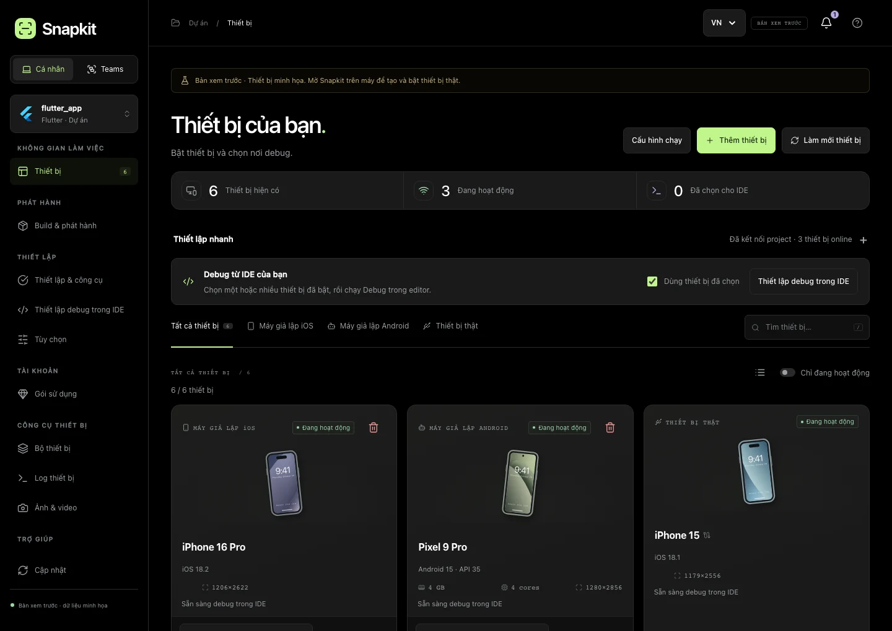
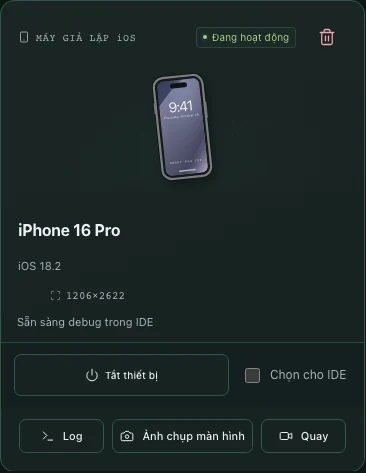
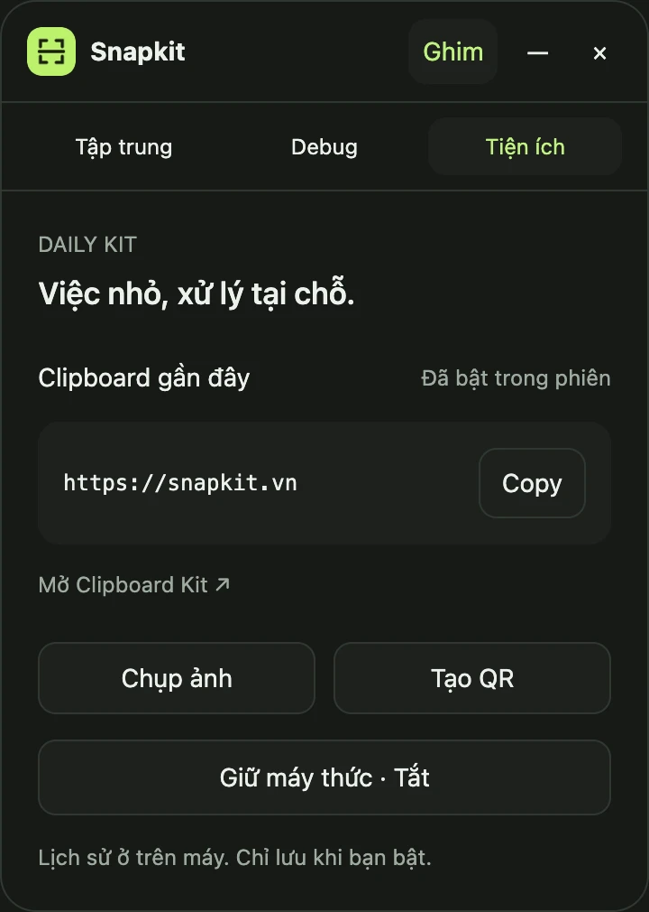
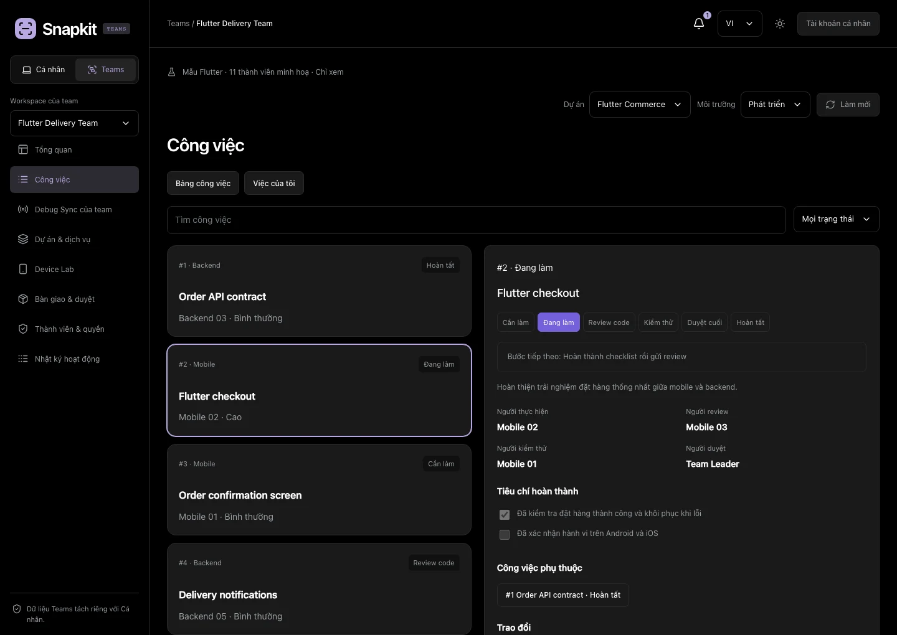
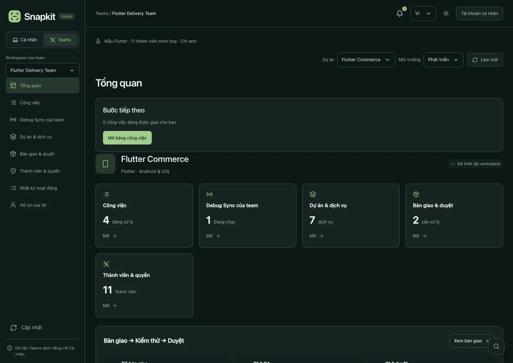
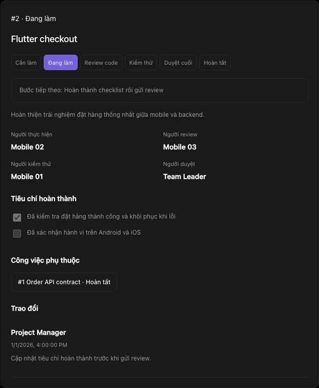
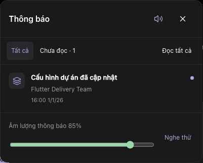
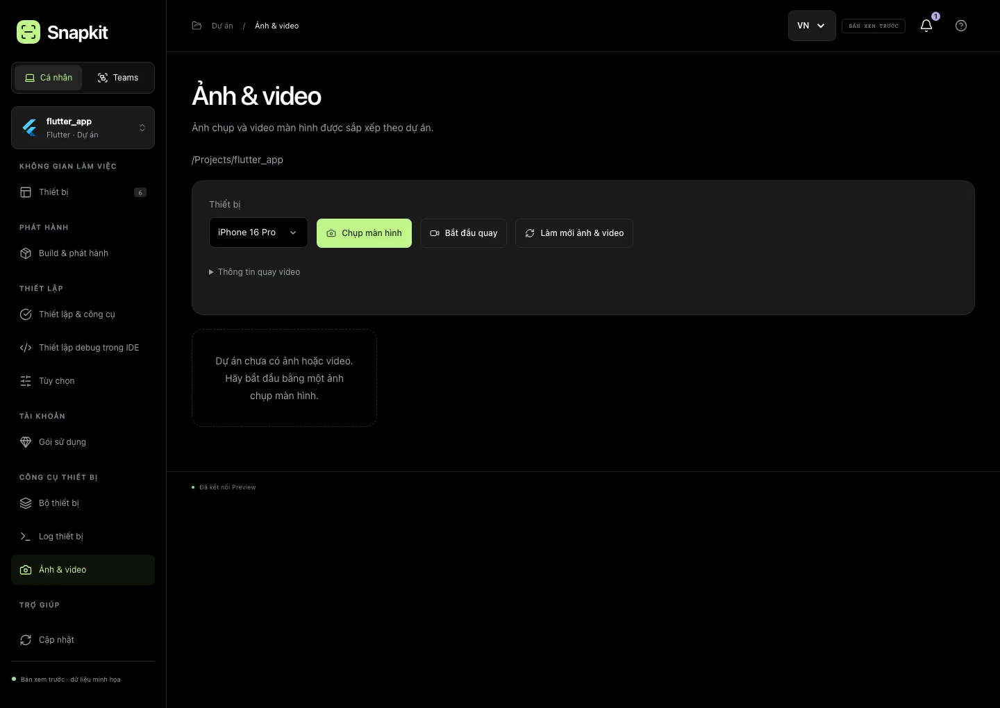
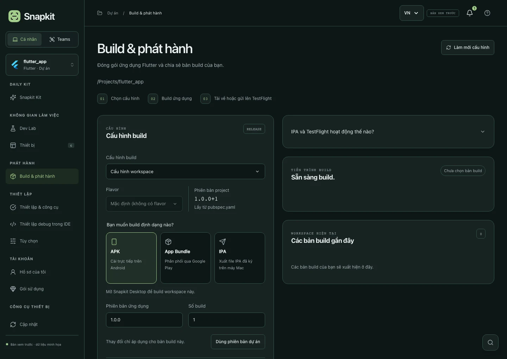

SNAPKIT CÁ NHÂN
Thiết bị của bạn. Nhịp làm việc của bạn.
Project ở local. Debug trên nhiều màn hình.
Tải SnapkitChọn thiết bị, bấm F5 và kiểm tra ứng dụng trên nhiều màn hình.
Ứng dụng desktop · macOS & Windows
macOS & Windows · Miễn phí · Đăng nhập Google


DAILY KIT
Clipboard, ảnh, QR và tệp. Bộ tiện ích cho mọi người dùng Mac và Windows.
Thêm Image Kit, Text Kit, File Check và Focus Kit. Không cần kết nối dự án.
SNAPKIT MINI
Ba chế độ. Một widget nhỏ. Tập trung, theo dõi debug và dùng tiện ích ngay trong tầm tay.
Menu bar trên Mac. System tray trên Windows.
Tải bản desktop
PERSONAL / TEAMS
Project ở local. Debug trên nhiều màn hình.
Tải Snapkit
Cá nhân lưu trên máy. Teams chia sẻ theo quyền truy cập.
SNAPKIT TEAMS


Người phụ trách. Ưu tiên. Tiêu chí hoàn thành.
Task mobile kết nối project và Debug Sync.
Review, kiểm thử và thông báo khi đến lượt bạn.
YOUR DAILY TOOLKIT
Nhắc cấp quyền lần đầu. Âm báo tuỳ chọn.




WORKFLOW CỦA BẠN
Chọn framework để xem cách Snapkit kết nối với project và IDE của bạn.
Chọn dự án và những thiết bị cần kiểm tra. Tiếp tục dùng Hot Reload, breakpoint và công cụ Flutter ngay trong editor quen thuộc.
Tải SnapkitFlutter profile → F5 → Selected devices
Build APK / AAB trên macOS và Windows. IPA / TestFlight cần macOS, Xcode và signing phù hợp.
Kết nối dự án React Native, chọn thiết bị và tiếp tục debug với Metro, Hermes và Fast Refresh trong workflow quen thuộc.
Tải SnapkitSnapkit React Native → F5 → Metro + Hermes
Expo cần prebuild. Chưa hỗ trợ Expo Go, khởi chạy IDE trên iPhone thật hoặc build release React Native.
Giữ editor bạn yêu thích.
Tải Snapkit cho máy của bạn. Tất cả tính năng hiện có đều miễn phí.
macOS 13 trở lên · Android & iOS Simulator
iOS Simulator cần cài Xcode riêng.
Dành cho máy Intel / AMD 64-bit.
Android Emulator & điện thoại Android.
Chọn bộ cài phù hợp với máy của bạn.
Bộ cài macOS chưa có Developer ID/notarization của Apple; Windows chưa có chứng chỉ nhà phát hành. macOS có thể chặn mở bộ cài hiện tại; xem hướng dẫn cài đặt trước khi tải.
TỪ NGƯỜI DÙNG SNAPKIT
Đang tải đánh giá…
CÙNG XÂY DỰNG SNAPKIT
Bạn đang gặp lỗi, có ý tưởng mới hay muốn chia sẻ trải nghiệm? Gửi trực tiếp cho đội ngũ Snapkit.
Đánh giá chỉ được công khai khi bạn đồng ý và quản trị viên duyệt. Email, báo lỗi và đề xuất tính năng được giữ riêng. Không gửi mật khẩu, token hoặc dữ liệu nhạy cảm.
TRƯỚC KHI BẠN BẮT ĐẦU
Cá nhân và Teams là hai khu vực riêng trong cùng ứng dụng. Dữ liệu Cá nhân ở trên máy bạn. Nội dung được chia sẻ trong Teams chỉ dành cho thành viên có quyền truy cập.
Có. Tất cả tính năng hiện có, bao gồm các tính năng dự kiến thuộc Pro, đều đang miễn phí. Không cần thẻ và không tự chuyển sang trả phí. Giá và giới hạn sẽ được thông báo trước khi mở bán.
Snapkit không yêu cầu cài Node.js. Bạn cần Flutter SDK cho Flutter, hoặc Node.js và công cụ native cho project React Native. iOS Simulator cần macOS cùng Xcode; Android cần Android SDK và Emulator. Mục Kiểm tra công cụ trong app giúp bạn biết còn thiếu gì.
Snapkit không tự tải mã nguồn, log hoặc ảnh/video của bạn lên cloud. Bạn cần Internet để đăng nhập, cập nhật và sử dụng workspace Teams.
Bản macOS hiện tại đã ký tạm nhưng chưa có Developer ID và notarization của Apple. Chép Snapkit vào thư mục Applications có quyền ghi, rồi thử Cài đặt hệ thống → Quyền riêng tư & Bảo mật → Vẫn mở. macOS vẫn có thể yêu cầu xử lý quyền mở cho bản test đã tải về. Nếu máy yêu cầu ứng dụng được Apple xác minh, hãy chờ bản phát hành có chứng chỉ. Windows cũng có thể cảnh báo nhà phát hành chưa xác minh.
Flutter debug và Hot Reload do IDE quản lý qua profile hiện có. Với React Native, Snapkit Debug Sync build/mở app, quản lý Metro và gắn debugger Hermes theo từng thiết bị. Build & release trong Snapkit hiện dành cho Flutter.
MORE BUILDING. LESS SWITCHING.